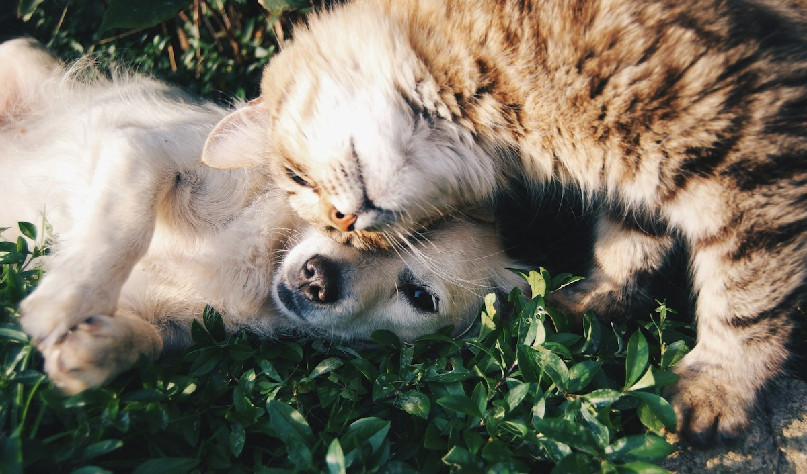
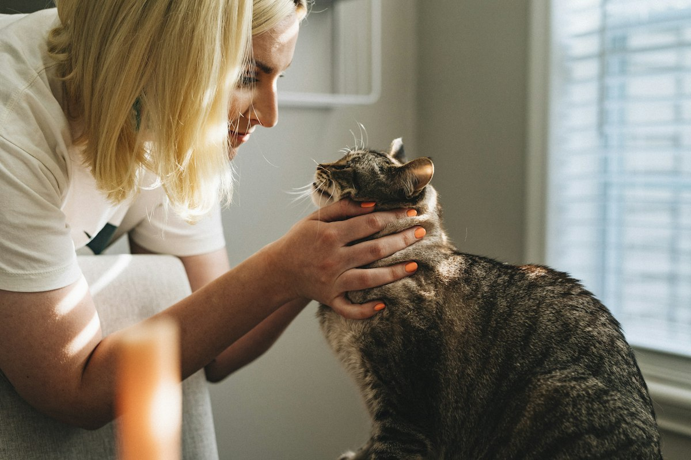
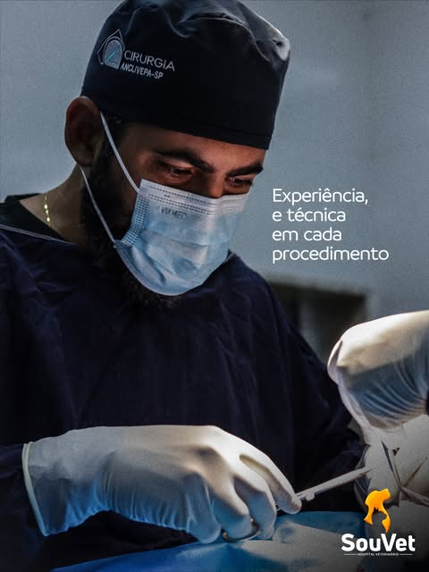
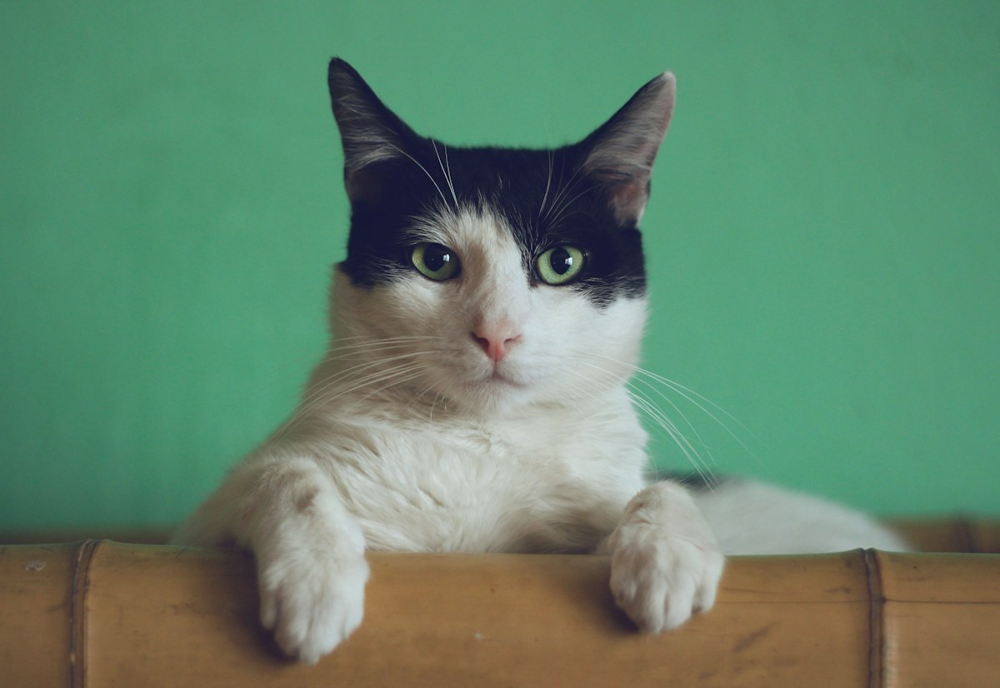
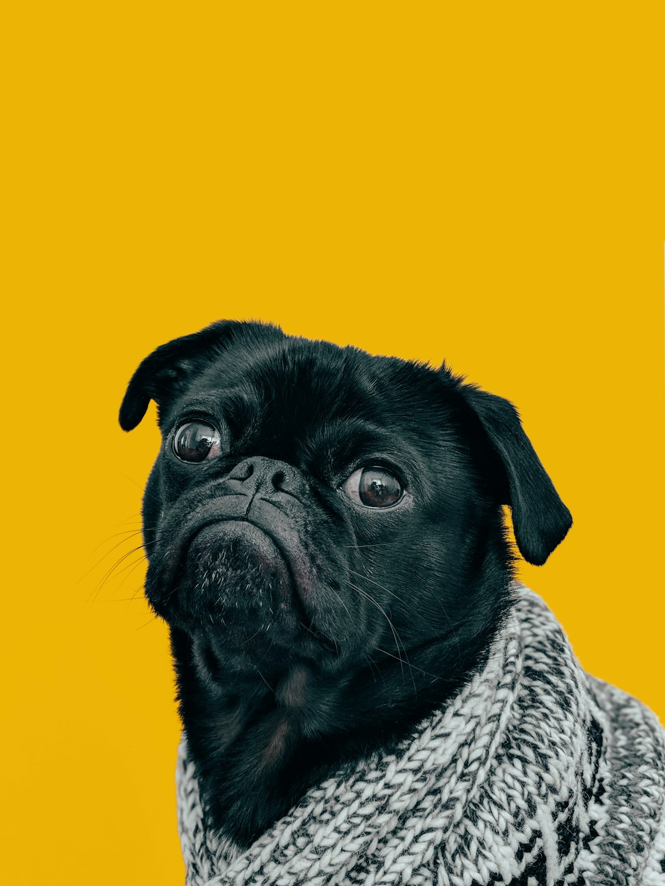
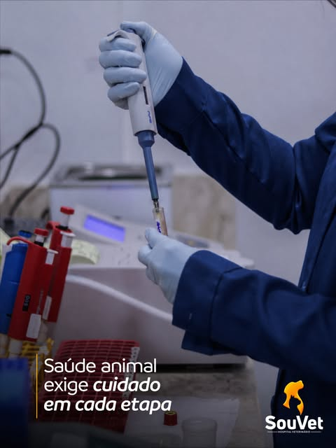

Plantão 24 horas
Emergências a qualquer hora, inclusive fins de semana e feriados.
No coração do Bessa, em João Pessoa, a Sou Vet une equipe experiente, estrutura completa e muito carinho para cuidar do seu cão ou gato em qualquer hora do dia ou da noite.
4,6 no Google · mais de 700 avaliações de tutores
Emergências a qualquer hora, inclusive fins de semana e feriados.
Leitos com acompanhamento contínuo da equipe médica.
Clínicos, cirurgiões e especialistas dedicados ao seu pet.
Atendimento humano e carinhoso, com o tutor sempre informado.
Somos um hospital veterinário completo, pensado para oferecer segurança ao tutor e conforto ao paciente. Aqui, cada recuperação é comemorada como se fosse da nossa própria família.
Médicos veterinários que escolheram dedicar a vida a cuidar de quem não tem voz. Experiência e técnica em cada procedimento, com olhar atento a cada detalhe.
Consultórios, centro cirúrgico, internamento, laboratório e diagnóstico por imagem. Menos deslocamento e mais agilidade para o seu pet.
Explicamos cada orientação com clareza e mantemos você por perto durante todo o tratamento, da consulta à alta.

Da consulta de rotina à emergência: atendimento completo para cães e gatos, com agilidade e segurança.
Consultas, check-ups e acompanhamento preventivo para todas as fases da vida.
Plantão ininterrupto para urgências, com estabilização rápida e equipe pronta.
Monitoramento 24 horas, medicação no horário certo e boletins para o tutor.
Centro cirúrgico equipado para procedimentos eletivos e de urgência.
Laboratório próprio para resultados ágeis e diagnósticos mais precisos.
Raio-X e ultrassonografia com laudos de profissionais experientes.
Atendimento com especialistas, como oftalmologia, para casos que pedem um olhar a mais.
Protocolos vacinais, vermifugação e orientação para uma vida longa e saudável.

Nossa equipe está de plantão 24 horas por dia, 7 dias por semana. Fale com a gente pelo WhatsApp ou ligue direto para o hospital.




Fui atendida à noite e o atendimento foi excelente. O Dr. João foi muito cuidadoso com meu gato, o Gil, e passou todas as orientações e cuidados pra gente. Agradeço pelo ótimo atendimento e acolhimento!
Meus pets são acompanhados por essa clínica há muitos anos e, a cada atendimento, minha confiança e admiração só aumentam. Quero registrar minha imensa satisfação.
Ótimo tratamento, ambiente, pessoas atenciosas comigo e com meus bichos. Profissionais atenciosos e recepção muito amigável.
Av. Pres. Nilo Peçanha, 349 - Bessa
João Pessoa - PB, 58035-200
Aberto 24 horas, todos os dias
Atendimento e internamento